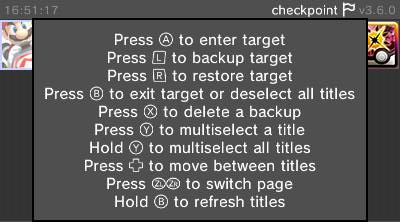
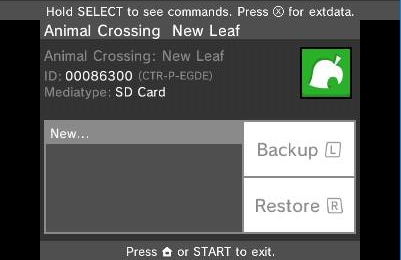
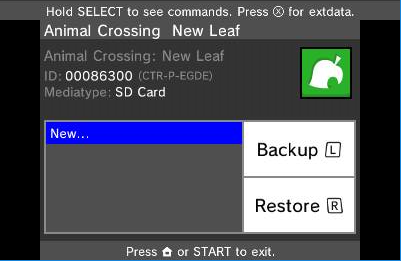
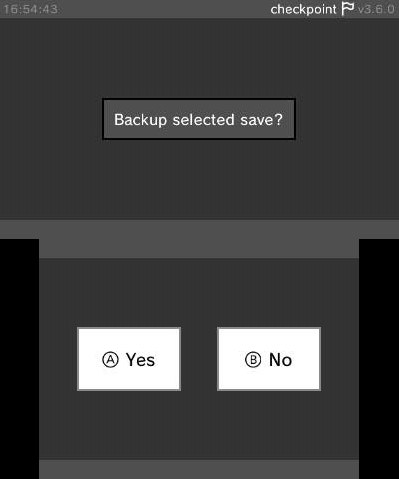
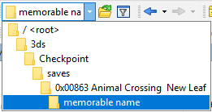
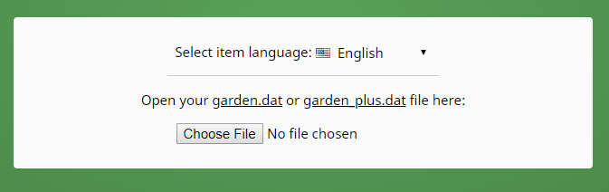
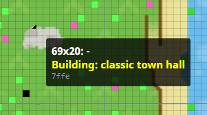
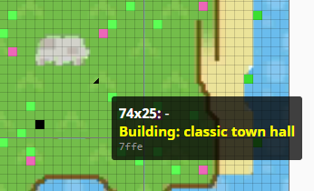
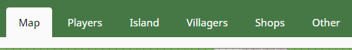
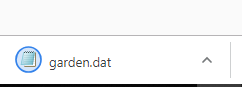

AC:NL Save Editor
This page contains some (basic) instructions on using Marc Robledo's ac:nl save editor to edit your AC:NL town and data.
The AC:NL editor can do much more than what this simple tutorial shows, and if you want guidance on other nifty things it can do like villager edits, character injection, furniture and building editing and other rad things, ask the internet or the AC:NL discord. You will also find useful information there, such as an ntr plugin for ac:nl and the #faq channel that has things like building sizes and etc.
- First of all, you'll need an AC:NL game with a save. It doesn't matter if you've only played up to the point where you plant the sapling, or you've paid off your home loan. You can't generate a save to edit, you need to pull one you already have.
- Second, you (likely) need a hacked console, and a save data manager. For this, I'll be using Checkpoint which is recommended for the 3DS and the Switch.
- Here is a listing of Checkpoint's controls (on the 3DS), for your reference.

- On the top screen, you will see a list of your games. Scroll to select the game you intend to modify. You will see it show up on the bottom screen, like so:

- Select the game by pressing A. It will show up blue:

- Press the left shoulder button, or tap the "Backup" button on the screen, with "New" selected, then press A at the following screen:

This will copy the save file from the game to your SD card, decrypted so that you can use it.
- Give it a memorable name:

- Now, put your SD card into your computer (or activate a wireless file transfer solution).
- Find your save on your SD card. Here is an example directory structure. Yours will probably be very similar.

- Inside that folder is your save, in this case called "garden.dat". Note specifically that it is 511KB and does have a file extension of ".dat". Copy "garden.dat" to somewhere on your computer.

- Make another copy of "garden.dat" so that you have one you are going to edit, and one that is going to remain clean. If you edit the save again, keep one copy of the last known working save, and edit another separate copy.
- Open Marc Robledo's ACNL save editor, and upload your "garden.dat":

- Now you can edit your town. Various things are possible. However, please carefully read the editor FAQ, specifically the "How do I ensure my savegame doesn't get glitched?" section.
- Buildings are marked on the map (left of screen) by a corner arrow.

- In the building list (right of screen), click the hand next to a building to move it.

- Click a new spot on the map after clicking the hand to pick a spot to move it to.

- You can edit various other things such as your player details, island layout, villagers details, shop details and prices, furniture, etc, etc. Check the tabs and read at your leisure.

- Again, it must be stressed: please carefully read the editor FAQ, specifically the "How do I ensure my savegame doesn't get glitched?" section.
- Once you have finished your edits, Save Changes:

- You will receive a "garden.dat" file in your downloads:

- Locate this file, then copy it back to your SD card to the same directory it came from in the first place. Here is my example directory, if that helps you remember. Overwrite the existing save with the edited save.
- Put your SD card back in your console.
- Load Checkpoint, select your game, select the memorable name you chose earlier, and select Restore:

This will inject your save file back into the game, encrypted so the game can use it.
- Once this succeeds, close Checkpoint, open your game, load your save and check your modifications succeeded.